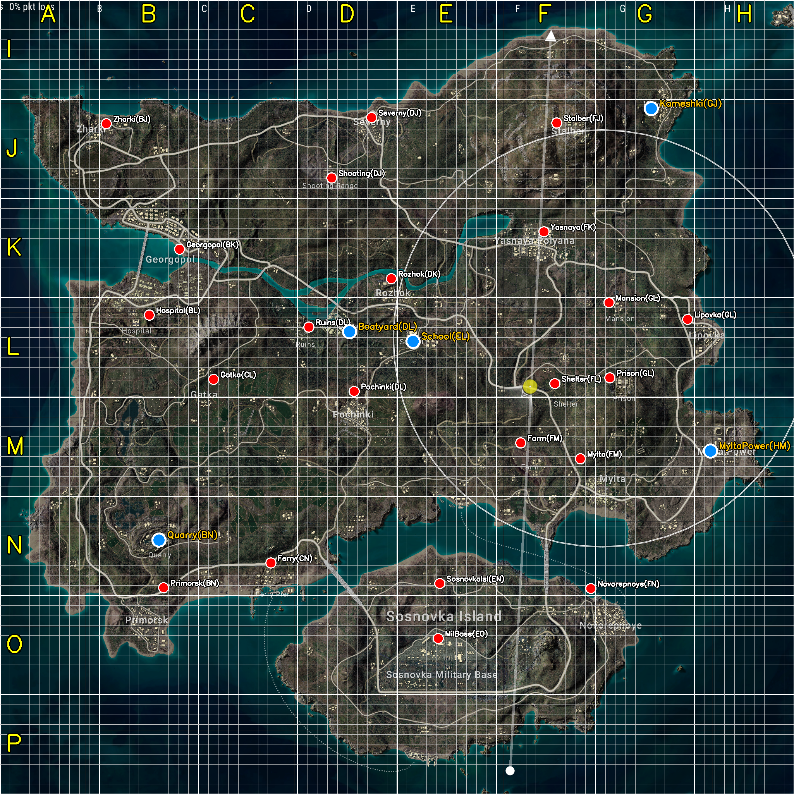
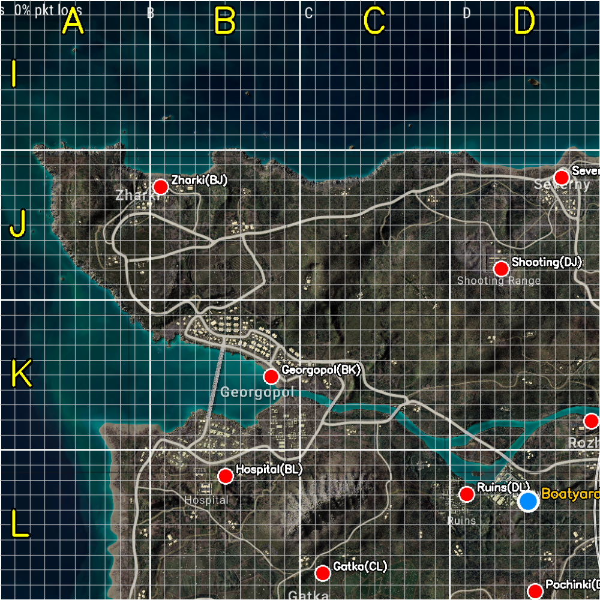
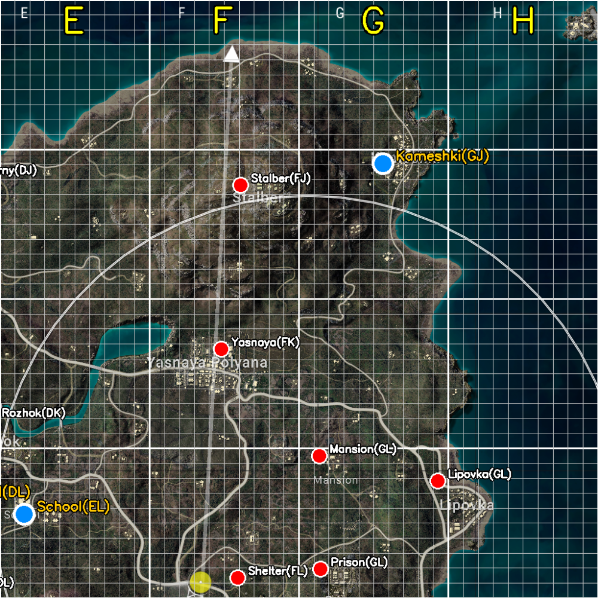
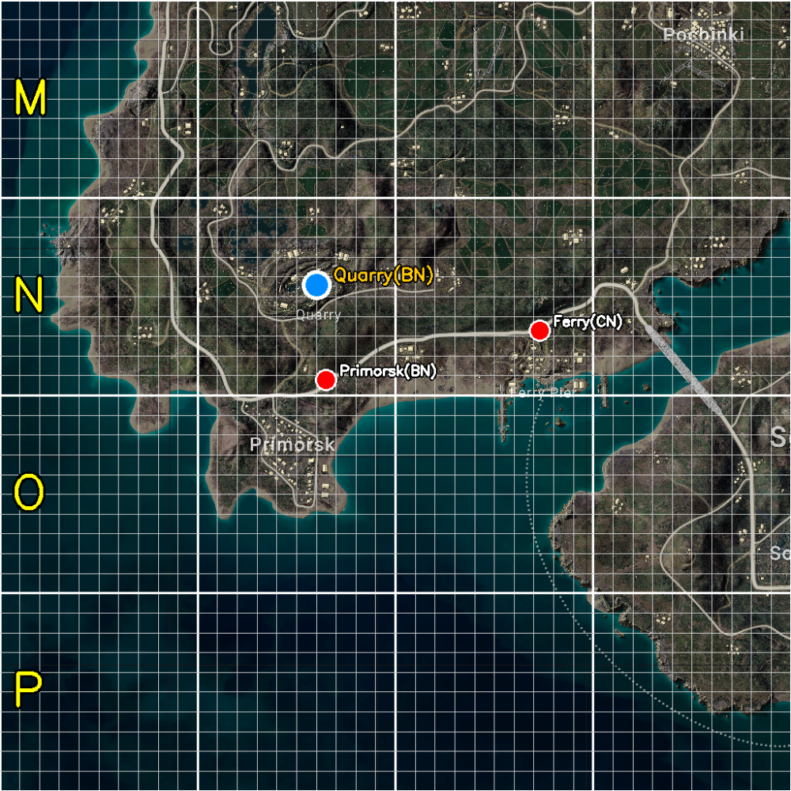
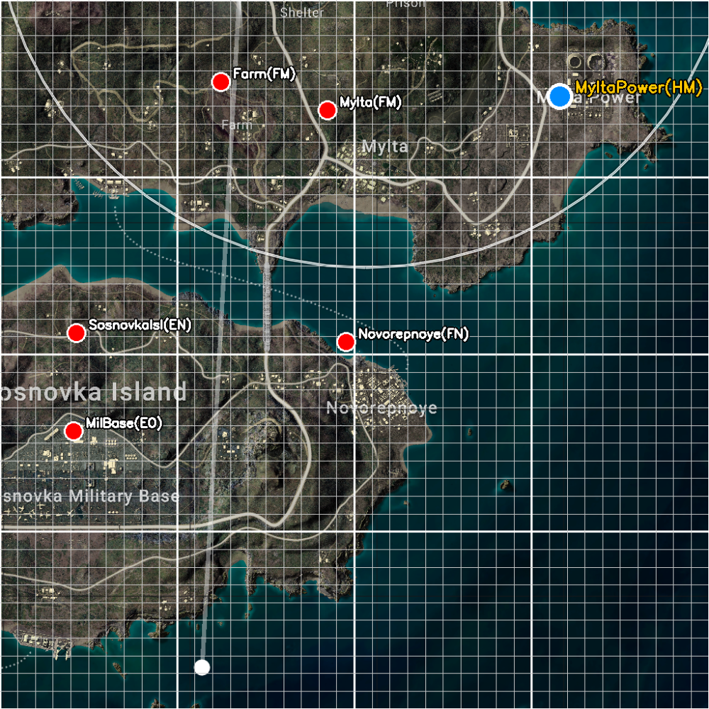

| 도시 | 한글 | 정규화 좌표 (gx, gy) | 격자 셀 | 위치 설명 |
|---|---|---|---|---|
| Kameshki | 카메슈키 | (0.820, 0.137) | GJ | 맵 북동 코너, Stalber 동쪽 해안가 |
| Boatyard | 보트야드 | (0.440, 0.418) | DL | Rozhok 서남, Ruins 동쪽 (선착장) |
| School | 학교 | (0.520, 0.430) | EL | Boatyard 동쪽, Pochinki 북쪽 (H자 학교 건물) |
| MyltaPower | 미타파워 | (0.895, 0.568) | HM | 맵 동쪽 반도, 발전소 시설 (원통 구조물) |
| Quarry | 채석장 | (0.200, 0.680) | BN | Primorsk 북쪽, 원형 채굴 흔적 (남서부 내륙) |
| 도시 | 좌표 | 격자 |
|---|---|---|
| Pochinki | (0.446, 0.493) | DM |
| Rozhok | (0.493, 0.351) | EL |
| Mansion | (0.767, 0.381) | GL |
| MilBase | (0.552, 0.804) | EO |
| Novorepnoye | (0.744, 0.741) | FN |
| Yasnaya | (0.685, 0.292) | FK |
| Severny | (0.468, 0.148) | DJ |
| Georgopol | (0.226, 0.314) | BK |
| Primorsk | (0.206, 0.740) | BN |
| Mylta | (0.731, 0.578) | FM |
| Lipovka | (0.866, 0.402) | GL |
| Gatka | (0.269, 0.478) | CL |
| Zharki | (0.134, 0.156) | BJ |
| Hospital | (0.188, 0.397) | BL |
| Shooting | (0.418, 0.224) | DJ |
| Ferry | (0.341, 0.709) | CN |
| Stalber | (0.701, 0.155) | FJ |
| Ruins | (0.389, 0.412) | DL |
| SosnovkaIsl | (0.554, 0.735) | EN |
| Prison | (0.768, 0.476) | GL |
| Farm | (0.656, 0.558) | FM |
| Shelter | (0.699, 0.483) | FL |
packages/shared/src/data/erangel-cities.ts 등)에 추가apps/services/location/prisma/seed.ts의 stash 주석에서 "Quarry 근처" 등 신규 도시 기준 참조 가능